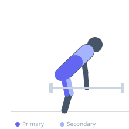

Exercise guide / Deficit Barbell Deadlift
Deficit Barbell Deadlift
The deficit deadlift is performed with the lifter standing on a raised platform (typically 1-4 inches), which lowers the starting position of the barbell relative to the hips. This requires greater knee flexion and hip hinge depth, increasing quadriceps engagement at the initiation of the pull. It is used to build strength off the floor and address weakness in the initial pull phase of the conventional deadlift.
Primary muscles
erector spinae
gluteus maximus
hamstrings
Secondary muscles
rectus femoris
vastus lateralis
latissimus dorsi
trapezius upper
Stabilizers
transverse abdominis
flexor carpi radialis
Equipment
Standard Barbell
Weight Plates
Optional
Lifting Straps


Starting position
- Stand on a platform (bumper plates, wooden block, or dedicated riser) 1-4 inches high. The barbell sits on the floor below. Foot position is the same as conventional deadlift.
Setup
- Ensure the platform is completely stable. The deficit increases the range of motion — reduce training load relative to your conventional deadlift maximum.
Steps
- Step 1: Stand on the platform, barbell over mid-foot below the platform level.
- Step 2: Hinge at the hips and bend the knees more than in a conventional deadlift to reach the bar.
- Step 3: Grip the bar, brace the core, and set the spine to neutral.
- Step 4: Drive the floor away with the legs while keeping the back angle constant from the floor through knee height.
- Step 5: Lock out hips and knees at the top. Return under control to the floor below the platform.
Coaching cues
- More knee bend than a standard deadlift
- Lat engagement — protect the bar path
- Drive the floor away
Breathing
- Take a deep breath and brace (Valsalva) before each rep. Exhale at lockout or after the bar is secured on the floor.
Range of motion
- Bar starts below the platform level (greater depth than floor deadlift). Full hip and knee extension at lockout.
Tempo
- 2-1-1-0
Common mistakes
- Using too large a deficit before having the flexibility to maintain a neutral spine
- The hips shooting up at the start, turning it into a stiff-leg deadlift
- Losing lat engagement, allowing the bar to drift forward
Safety
- Requires superior hamstring flexibility compared to a floor deadlift
- Reduce weight relative to conventional deadlift maximum
- Inspect the platform stability before each set
Training
- strength: 1–5 reps
- hypertrophy: 5–8 reps
- strength: 3–6 sets
- hypertrophy: 3–4 sets
- Rest: {'strength': 240, 'hypertrophy': 150}